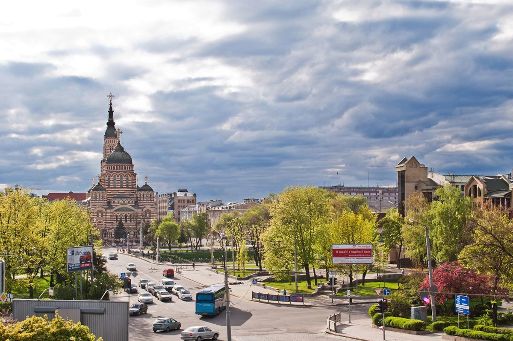

Місто науки та великих площ

Харків - одне з найбільших міст України, розташоване на сході країни. Він відомий потужними університетами, науковими традиціями, метро та поєднанням історичної й модерністської архітектури.
Чому я обираю Харків
Мені дуже подобається харківська атмосфера та масштаби міста. У місті багато студентів, просторих скверів, театрів і незвичайних будівель, які цікаво розглядати під час прогулянок.
Цікаві факти
- Харків був першою столицею Української Радянської Соціалістичної Республіки у 1919-1934 роках.
- Площа Свободи є однією з найбільших площ Європи.
- У Харкові працює метрополітен із трьома лініями.
Визначні місця
Площа Свободи, Держпром, дзеркальний струмінь, Благовіщенський собор, сад імені Шевченка та Харківський літературний музей.
Моя оцінка: 9/10